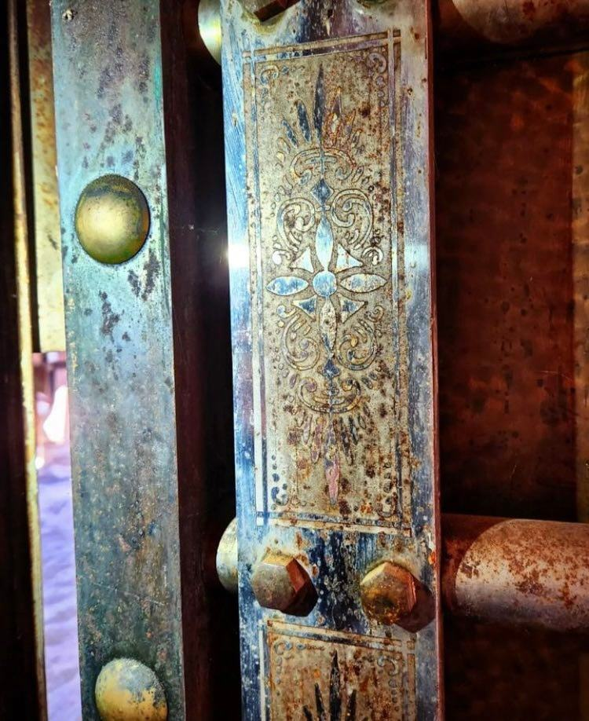
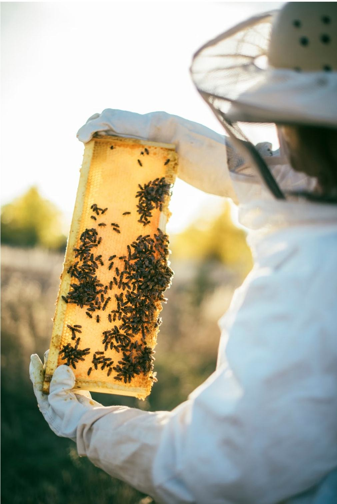
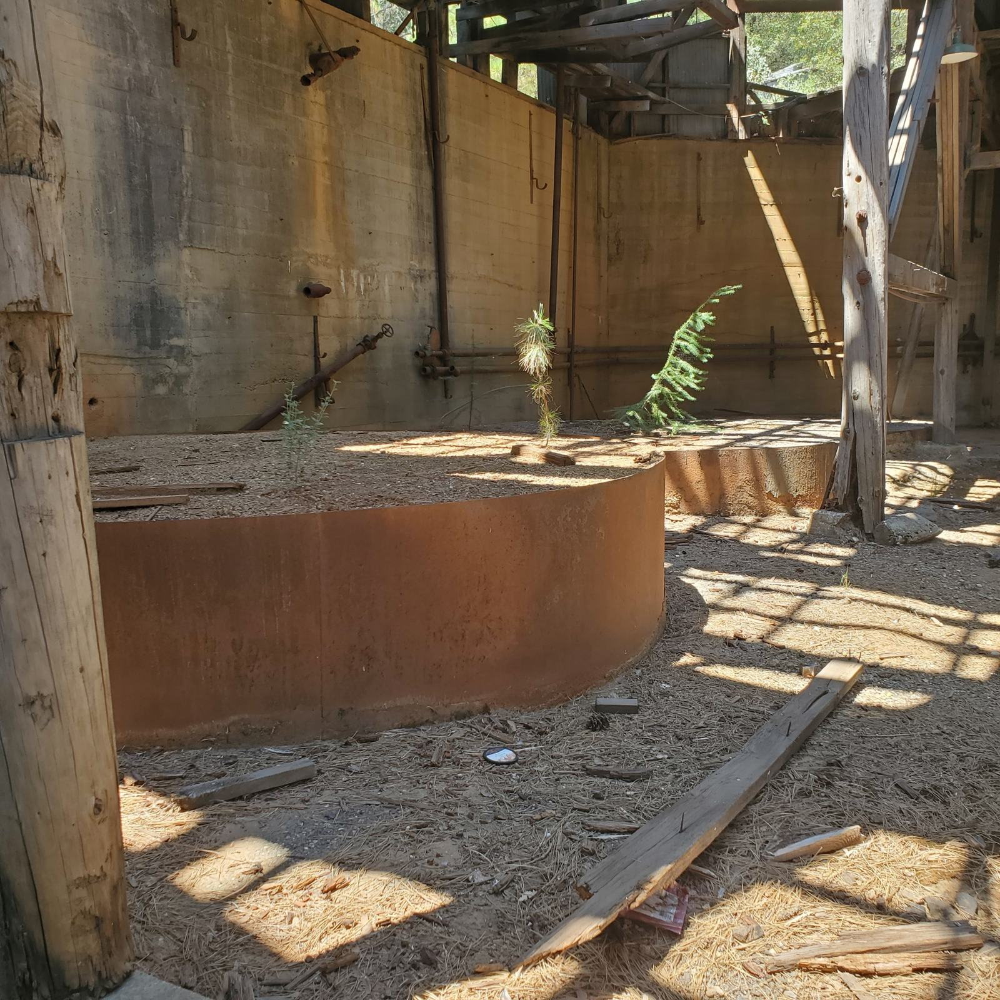

Something for every learner
There is no better classroom than the real thing. At Lava Cap, students do not just read about history, they walk through it.

K-12 Field Trips
Curriculum-aligned guided tours of the historic mine site. Students explore original structures, handle replica artifacts and hear the stories of the miners. Programs are tailored to grade level and California history standards.
- Guided site tours
- Hands-on artifact handling
- Pre- and post-visit materials

Beekeeping Workshop
Discover the world of bees in the heart of Gold Country: hive management, the role of pollinators and the history of beekeeping in the Sierra Nevada foothills.
- Hands-on hive experience
- Protective gear provided
- Honey tasting

University Research Access
The Lava Cap site and archives are a resource for research in California history, geology, labor history and environmental studies. We welcome partnerships with universities and research institutions.
- Access to historical archives
- Faculty partnership program
- Thesis support

Wood Skills Workshop
A hands-on introduction to working with wood from forest to finished product, including chainsaw operation and safety, portable-mill wood milling, log splitting and tool care.
- Chainsaw operation and safety
- Wood milling with a portable mill
- All safety gear provided
Book a Program for Your Group
Teachers planning a field trip, professors seeking research access and community members eager to learn are all welcome.
Request a Booking